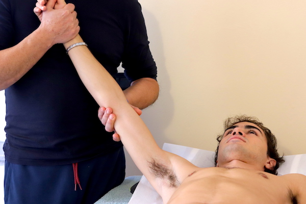

Fisiokinesiterapia
Effetti terapeutici
La fisiokinesiterapia è una particolare ginnastica che aiuta a ritrovare e mantenere l’equilibrio
posturale del corpo
eliminando dolori articolari derivanti da traumi o sedentarietà e prevenendone l’insorgenza.
Non ci sono limiti di età per sottoporsi alla fisiokinesiterapia, è anzi ormai divenuta parte
integrante sia dei
programmi di allenamento agonisitico che della prevenzione quotidiana.
Patalogie trattate
Con la fisiokinesiterapia è possibile limitare e correggere scoliosi, distorsioni, lussazioni, artrosi, nonché i postumi di fratture, lesioni e infiammazioni. Si è rivelata molto utile anche nel trattamento di pazienti con sclerosi multipla e patologie neuromuscolari.
Cos'è e come funziona
La fisiokinesiterapia è una ginnastica sviluppata per precise funzioni terapeutiche. Seguiti dalle precise indicazioni del medico e talvolta con l’ausilio di strumenti correttivi, con la fisiokinesiterapia è possibile riabituare il corpo ai movimenti e alle posizioni corrette.
Controindicazioni
Il paziente prima di sottoporsi a sedute di fisiokinesiterapia dovrà sottoporre tutta la
documentazione che indica la
presenza di ernie o traumi articolari di qualsiasi tipologia.
Va ricordato che un’attività fisica moderata, completa e personalizzata unita a una corretta
alimentazione e a un
corretto atteggiamento mentale, risulta indispensabile per la nostra salute.
Trattamento
Oltre all’esecuzione di specifici esercizi, la fisiokinesiterapia si accompagna a stretching muscolare, rinforzo muscolare, massaggi, vari tipi di mobilizzazioni articolari e rieducazione respiratoria oltre che tecniche di visualizzazione. Le sedute possono durare da 30 minuti a 1 ora.